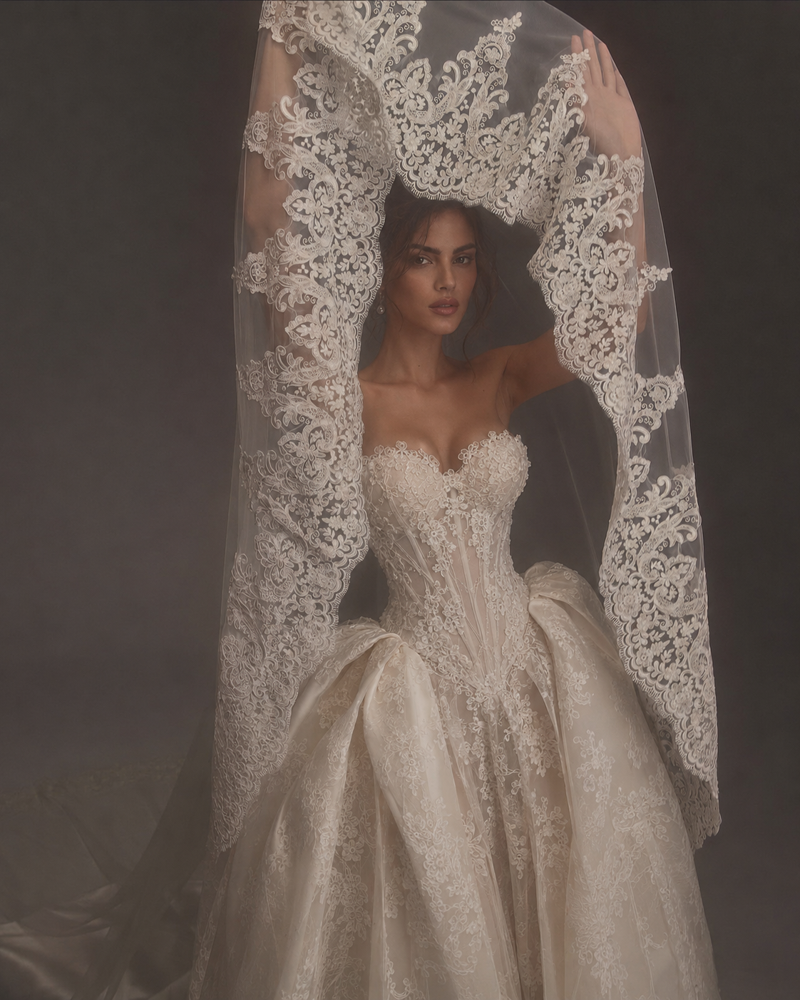

NKEM ATELIER

Nkem means “mine” and that is the heart of the atelier.
Every garment is designed, fitted or altered with care, so it feels personal, comfortable and truly yours.
Whether you need wedding dress alterations, bespoke bridalwear, custom bridal changes, or a special occasion dress made or fitted in Bristol, Nkem Atelier offers careful, friendly and professional dressmaking to help your garment feel truly yours.
I can’t thank Alexandra enough for what she did with my wedding dress. When I first brought it in, it was too small and I honestly wasn’t sure it could be altered to fit properly. From the very first fitting, she put me at ease and was so patient and reassuring throughout the process. Each fitting brought the dress closer to perfection, and by the end it fit like it had been made for me. Not only did it look beautiful, but I felt comfortable and confident wearing it on my wedding day. I will keep recommending Nkem Atelier xx